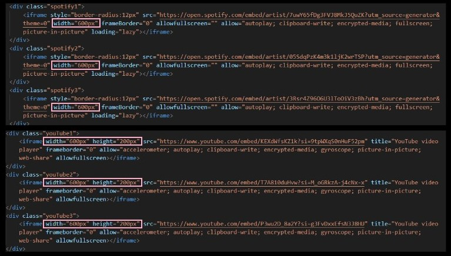
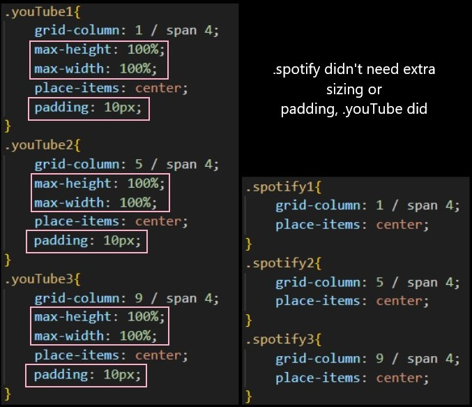

Week 3
BEST PART OF THE WEEK:
My 1-2-1
It provided a valuable opportunity to genuinely asses how I present myself as a person, as well as to gather my tutors insights on my work and identify ways to improve
However, part of me feels the constructive criticism was somewhat subdued (probably as it was our first big project) - I appreciate harsh criticism on my work as I view it as a means to enhance rather than an indication of failure, plus it keeps me grounded. I thrive learning through mistakes and improvements, so hopefully in the next project I'll recieve more areas for improvement to further challenge myself and refine my finished projects.
WORST PART OF THE WEEK:
Photo Montage on my Contents page
It's not exactly what I had envisioned, but it does bear a rough resemblance to my idea and functions as intended. I successfully arranged the pictures to be fully visable on the page, rather than squished up and partially off the left side of the screen. However, my original goal was to have the photos partially stacked on each other, or positioned closer together in the center.
3 NEW FACTS:
- Agile Software Development Cycle: concept > design > develop > test > deploy > review > release
- Pseudocode: helps think through a function and spot logic to resolve function
- How to embed a video/song on my site
PROBLEM I SOLVED:
When I embedded the Spotify tracks, they all aligned perfectly without much editing, however when I embeded the YouTube videos, everything became disorganised. To resolve this, I had to manually adjust the sizing in html and css for each video individually.
 